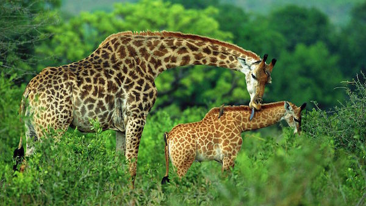

GIRAFFE
Giraffes are the tallest animals on earth and one of Africa's most iconic creatures. They belong to the Giraffidae family and are known for their incredibly long necks, long legs, and unique spotted coat patterns that are different for every single giraffe, just like human fingerprints. They are found across sub-Saharan Africa in savannahs and open woodlands. A male giraffe can grow up to 5.5 meters tall and weigh over 1,200kg, with females being slightly smaller. Despite their height, they only have seven neck bones, the same as humans, just much larger.
The giraffe's long neck isn't just for reaching high leaves - it's a powerful tool for fighting and seeing far across the plains. Males swing their necks to hit each other in fights for dominance. Their tongue is about 50cm long, dark purple, and tough enough to wrap around thorny acacia branches without getting hurt. Their legs are so long that they have to spread them wide or kneel down to drink water. That beautiful patchy coat provides perfect camouflage among the trees and shadows of the savannah.
They are strict browsers that feed mostly on acacia leaves, flowers and fruits, eating up to 30kg of leaves a day. They get most of their water from their food but will drink every few days. They live in loose, open herds that change constantly and sleep very little, often standing up.
WHERE WILL YOU FIND THEM
You will find the giraffes at pen E25, right next to the gemsbok enclosure.